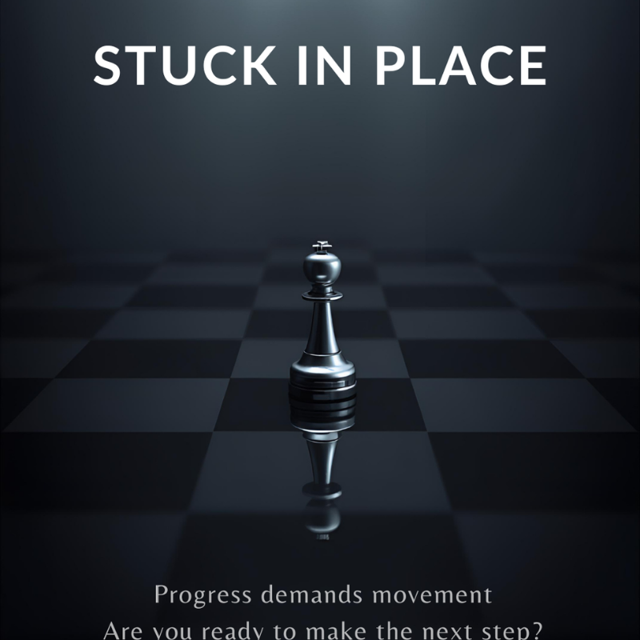

Stop Operating in English. Start Leading in English.
Existe uma diferença brutal entre falar inglês e liderar conversas em inglês. A maioria nunca cruza essa linha.
Leia Mais →Não é sobre aprender inglês. É sobre se posicionar com autoridade em ambientes internacionais.

Existe uma diferença brutal entre falar inglês e liderar conversas em inglês. A maioria nunca cruza essa linha.
Leia Mais →Você estuda há anos… mas continua travado em reuniões. O problema não é inglês. É estratégia.
Leia Mais →Não é sobre fluência. É sobre influência. Quem domina isso acelera carreira — rápido.
Leia Mais →Publico insights práticos e análises reais diretamente no LinkedIn — onde profissionais aplicam no dia seguinte.
Ver artigos no LinkedIn →Precisa de clareza para se posicionar sob pressão em ambientes globais.
Receber diagnóstico estratégico